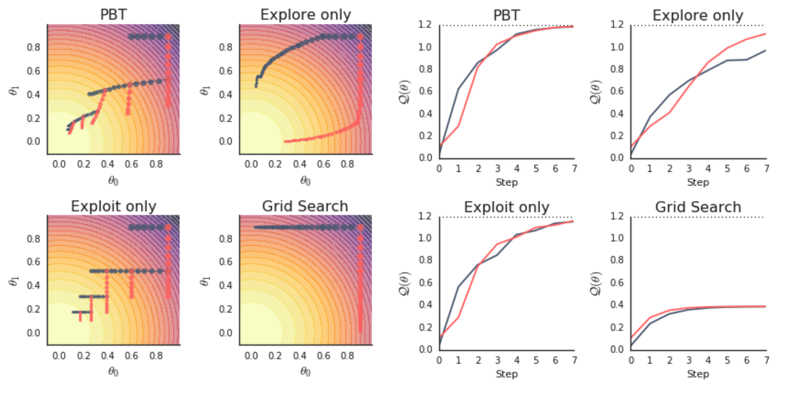

Visualizing Population Based Training (PBT) Hyperparameter Optimization
Contents
Visualizing Population Based Training (PBT) Hyperparameter Optimization#
Assumptions: The reader has a basic understanding of the PBT algorithm and wants to dive deeper and verify the underlying algorithm behavior with Ray’s PBT implementation. This guide provides resources for gaining some context.
This tutorial will go through a simple example that will help you develop a better understanding of what PBT is doing under the hood when using it to tune your algorithms. Follow along by launching the notebook with the rocket 🚀 icon above.
We will learn how to:
Set up checkpointing and loading for PBT with the function trainable interface
Configure Tune and PBT scheduler parameters
Visualize PBT algorithm behavior to gain some intuition
Set up Toy the Example#
The toy example optimization problem we will use comes from the PBT paper (see Figure 2 for more details). The goal is to find parameters that maximize an quadratic function, while only having access to an estimator that depends on a set of hyperparameters. A practical example of this is maximizing the (unknown) generalization capabilities of a model across all possible inputs with only access to the empirical loss of your model, which depends on hyperparameters in order to optimize.
We’ll start with some imports.
!pip install -U "ray[tune]"
Note: If you’re running on Colab, please copy this helper file into your Colab mount as pbt_visualization_utils.py using the file explorer on the left.
import numpy as np
import matplotlib.pyplot as plt
import time
import ray
from ray import tune
from ray.air import session
from ray.air.checkpoint import Checkpoint
from ray.tune.schedulers import PopulationBasedTraining
from ray.tune.tune_config import TuneConfig
from ray.air.config import FailureConfig, RunConfig
from ray.tune.tuner import Tuner
from pbt_visualization_utils import (
get_init_theta, plot_parameter_history,
plot_Q_history, make_animation
)
Concretely, we will use the definitions (with very minor modifications) provided in the paper for the function we are trying to optimize, and the estimator we are given.
Here is a list of the concepts we will use for the example, and what they might be analagous to in practice:
Concept within this example |
Description |
Practical analogy |
|---|---|---|
|
The model parameters that we will update in our training loop. |
Neural network parameters |
|
The hyperparameters that PBT will optimize. |
Learning rate, batch size, etc. |
|
The quadratic function we are trying to maximize. |
Generalization capability over all inputs |
|
The estimator we are given as our training objective, depends ( |
Empirical loss/reward |
Below are the implementations in code.
def Q(theta):
return 1.2 - (3/4 * theta[0] ** 2 + theta[1] ** 2)
def Qhat(theta, h):
return 1.2 - (h[0] * theta[0] ** 2 + h[1] * theta[1] ** 2)
def grad_Qhat(theta, h):
theta_grad = -2 * h * theta
theta_grad[0] *= 3/4
h_grad = -np.square(theta)
h_grad[0] *= 3/4
return {"theta": theta_grad, "h": h_grad}
theta_0 = get_init_theta()
print("Initial parameter values: theta = ", theta_0)
Initial parameter values: theta = [0.9 0.9]
Defining the Function Trainable#
We will define the training loop:
Load the hyperparameter configuration
Initialize the model, resuming from a checkpoint if one exists (this is important for PBT, since the scheduler will pause and resume trials frequently when trials get exploited).
Run the training loop and checkpoint.
def train_func(config):
# Load the hyperparam config passed in by the Tuner
h0 = config.get("h0")
h1 = config.get("h1")
h = np.array([h0, h1]).astype(float)
lr = config.get("lr")
train_step = 1
checkpoint_interval = config.get("checkpoint_interval", 1)
logging_interval = config.get("logging_interval", 10)
# Initialize the model parameters
theta = get_init_theta()
# Load a checkpoint if it exists
# This checkpoint could be a trial's own checkpoint to resume,
# or another trial's checkpoint placed by PBT that we will exploit
if session.get_checkpoint():
checkpoint_dict = session.get_checkpoint().to_dict()
# Load in model (theta)
theta = checkpoint_dict["theta"]
last_step = checkpoint_dict["train_step"]
train_step = last_step + 1
# Main training loop (trial stopping is configured later)
while True:
# Perform gradient ascent steps
param_grads = grad_Qhat(theta, h)
theta_grad = np.asarray(param_grads["theta"])
theta = theta + lr * theta_grad
# Checkpoint every `checkpoint_interval` steps
checkpoint = None
should_checkpoint = train_step % checkpoint_interval == 0
if should_checkpoint:
checkpoint = Checkpoint.from_dict({
"h": h,
"train_step": train_step,
"theta": theta,
})
# Define which custom metrics we want in our trial result
result = {
"Q": Q(theta),
"theta0": theta[0], "theta1": theta[1],
"h0": h0, "h1": h1,
"train_step": train_step,
}
# Report metric for this training iteration, and include the
# trial checkpoint that contains the current parameters if we
# saved it this train step
session.report(result, checkpoint=checkpoint)
train_step += 1
Note
Since PBT will keep restoring from latest checkpoints, it’s important to save and load train_step correctly in a function trainable. Make sure you increment the loaded train_step by one as shown above. This avoids repeating an iteration and causing the checkpoint and perturbation intervals to be out of sync.
Configure PBT and Tuner#
We start by initializing ray (shutting it down if a session existed previously).
if ray.is_initialized():
ray.shutdown()
ray.init()
2022-09-14 11:43:32,337 INFO worker.py:1517 -- Started a local Ray instance.
Ray
| Python version: | 3.8.13 |
| Ray version: | 3.0.0.dev0 |
Create the PBT scheduler#
perturbation_interval = 4
pbt_scheduler = PopulationBasedTraining(
time_attr="training_iteration",
perturbation_interval=perturbation_interval,
metric="Q", mode="max",
quantile_fraction=0.5,
resample_probability=0.5,
hyperparam_mutations={
"lr": tune.qloguniform(5e-3, 1e-1, 5e-4),
"h0": tune.uniform(0., 1.),
"h1": tune.uniform(0., 1.),
},
synch=True,
)
A few notes on the PBT config:
time_attr="training_iteration"in combination withperturbation_interval=4will decide whether a trial should continue or exploit a different trial every 4 training iterations.metric="Q"andmode="max"specify how trial performance is ranked. In this case, the high performing trials are the top 50% of trials (set byquantile_fraction=0.5) that report the highestQmetrics. Note that we could have set the metric/mode inTuneConfiginstead.hyperparam_mutationsspecifies that the learning ratelrand additional hyperparametersh0,h1should be perturbed by PBT and defines the resample distribution for each hyperparameter (whereresample_probability=0.5means that resampling and mutation both happen with 50% probability).synch=Truemeans that PBT will run synchronously, which slows down the algorithm by introducing waits, but it produces more understandable visualizations for the purposes of this tutorial.In synchronous PBT, we wait until all trials reach the next
perturbation_intervalto decide which trials should continue and which trials should pause and start from the checkpoint of another trials. In the case of 2 trials, this means that everyperturbation_intervalwill result in the worse performing trial exploiting the better performing trial.This is not always the case in asynchronous PBT, since trials report results and decide whether to continue or exploit one by one. This means that a trial could decide that it is a top-performer and decide to continue, since other trials haven’t had the chance to report their better results yet. Therefore, we do not always see trials exploiting on every
perturbation_interval.
Create the Tuner#
tuner = Tuner(
train_func,
param_space={
"lr": 0.05,
"h0": tune.grid_search([0.0, 1.0]),
"h1": tune.sample_from(lambda spec: 1. - spec.config["h0"]),
"num_training_iterations": 100,
# Match `checkpoint_interval` with `perturbation_interval`
"checkpoint_interval": perturbation_interval,
},
tune_config=TuneConfig(
num_samples=1,
# Set the PBT scheduler in this config
scheduler=pbt_scheduler,
),
run_config=RunConfig(
stop={"training_iteration": 100},
failure_config=FailureConfig(max_failures=3),
),
)
Note
We recommend matching checkpoint_interval with perturbation_interval from the PBT config.
This ensures that the PBT algorithm actually exploits the trials in the most recent iteration.
If your perturbation_interval is large and want to checkpoint more frequently, set perturbation_interval to be a multiple of checkpoint_interval.
A few other notes on the Tuner config:
param_spacespecifies the initialconfiginput to our training function. Agrid_searchover two values will launch two trials with a certain set of hyperparameters, and PBT will continue modifying them as training progresses.The initial hyperparam settings for
h0andh1are configured so that two trials will spawn, one withh = [1, 0]and the other withh = [0, 1]. This matches the paper experiment and will be used to compare against agrid_searchbaseline that removes the PBT scheduler.
Run the experiment#
We launch the trials by calling Tuner.fit.
pbt_results = tuner.fit()
Visualize results#
Using some helper functions from here, we can create some visuals to help us understand the training progression of PBT.
fig, axs = plt.subplots(
1, 2, figsize=(13, 6),
gridspec_kw=dict(width_ratios=[1.5, 1])
)
colors = ["black", "red"]
labels = ["h = [1, 0]", "h = [0, 1]"]
plot_parameter_history(
pbt_results,
colors,
labels,
perturbation_interval=perturbation_interval,
fig=fig, ax=axs[0],
)
plot_Q_history(
pbt_results,
colors,
labels,
ax=axs[1]
)
The plot on the right shows the true function value Q(theta) as training progresses for both trials. Both trials reach the maximum value of 1.2.
Here’s how to understand the plot on the left:
The plot on the left shows the parameter values
(theta0, theta1)on every training iteration, for both trials. As the training iteration increases, the size of the point gets smaller.We see the iteration shown as a label next to points at every
perturbation_intervaltraining iterations. Let’s zoom into the transition from iteration 4 to 5 for both the trials.We see that a trial either continues (see how iteration 4 to 5 for the black trial just continues training) or exploits and perturbs the other trial and then performs a train step (see how iteration 4 to 5 for the red trial jumps to the parameter value of the black trial).
The gradient direction also changes at this step for the black trial due to the hyperparameters changing from the exploit and explore steps of PBT. Remember that the gradient of the estimator
Qhatdepends on the hyperparameters(h0, h1).The varying size of jumps between training iterations shows that the learning rate is also changing, since we included
lrin the set of hyperparameters to mutate.
Animate the training progress#
make_animation(
pbt_results,
colors,
labels,
perturbation_interval=perturbation_interval,
filename="pbt.gif"
)
We can also animate the training progress to see what’s happening to the model parameters at each step.
Grid Search Comparison#
The paper includes a comparison to a grid search of 2 trials, using the same initial hyperparameter configurations (h = [1, 0], h = [0, 1]) as the PBT experiment. The only difference in the code below is removing the PBT scheduler from the TuneConfig.
if ray.is_initialized():
ray.shutdown()
ray.init()
tuner = Tuner(
train_func,
param_space={
"lr": tune.qloguniform(1e-2, 1e-1, 5e-3),
"h0": tune.grid_search([0.0, 1.0]),
"h1": tune.sample_from(lambda spec: 1. - spec.config["h0"]),
},
tune_config=TuneConfig(
num_samples=1, metric="Q", mode="max",
),
run_config=RunConfig(
stop={"training_iteration": 100},
failure_config=FailureConfig(max_failures=3),
),
)
grid_results = tuner.fit()
if grid_results.errors:
raise RuntimeError
As we can see, neither trial makes it to the optimum, since the hyperparameter configs are stuck with their original values.
fig, axs = plt.subplots(
1, 2, figsize=(13, 6),
gridspec_kw=dict(width_ratios=[1.5, 1])
)
colors = ["black", "red"]
labels = ["h = [1, 0]", "h = [0, 1]"]
plot_parameter_history(
grid_results,
colors,
labels,
perturbation_interval=perturbation_interval,
fig=fig, ax=axs[0],
)
plot_Q_history(
grid_results,
colors,
labels,
ax=axs[1]
)

Compare the two plots we generated with Figure 2 from the PBT paper (in particular, we produced the top-left and bottom-right plots).

Increase PBT population size#
One last experiment: what does it look like if we increase the PBT population size? Now, low-performing trials will sample one of the multiple high-performing trials to exploit, and it should result in some more interesting behavior.
if ray.is_initialized():
ray.shutdown()
ray.init()
perturbation_interval = 4
pbt_scheduler = PopulationBasedTraining(
time_attr="training_iteration",
perturbation_interval=perturbation_interval,
quantile_fraction=0.5,
resample_probability=0.5,
hyperparam_mutations={
"lr": tune.qloguniform(5e-3, 1e-1, 5e-4),
"h0": tune.uniform(0., 1.),
"h1": tune.uniform(0., 1.),
},
synch=True,
)
tuner = Tuner(
train_func,
param_space={
"lr": tune.qloguniform(5e-3, 1e-1, 5e-4),
"h0": tune.grid_search([0.0, 1.0, 0.01, 0.99]), # 4 trials
"h1": tune.sample_from(lambda spec: 1. - spec.config["h0"]),
"num_training_iterations": 100,
"checkpoint_interval": perturbation_interval,
},
tune_config=TuneConfig(
num_samples=1,
metric="Q", mode="max",
# Set the PBT scheduler in this config
scheduler=pbt_scheduler,
),
run_config=RunConfig(
stop={"training_iteration": 100},
failure_config=FailureConfig(max_failures=3),
),
)
pbt_4_results = tuner.fit()
fig, axs = plt.subplots(
1, 2, figsize=(13, 6),
gridspec_kw=dict(width_ratios=[1.5, 1])
)
colors = ["black", "red", "blue", "green"]
labels = ["h = [1, 0]", "h = [0, 1]", "h = [0.01, 0.99]", "h = [0.99, 0.01]"]
plot_parameter_history(
pbt_4_results,
colors,
labels,
perturbation_interval=perturbation_interval,
fig=fig, ax=axs[0],
)
plot_Q_history(
pbt_4_results,
colors,
labels,
ax=axs[1]
)
make_animation(
pbt_4_results,
colors,
labels,
perturbation_interval=perturbation_interval,
filename="pbt4.gif"
)
Summary#
Hopefully, this guide has given you a better understanding of the PBT algorithm. Please file any issues you run into when running this notebook and ask any questions you might have in the Ray Slack